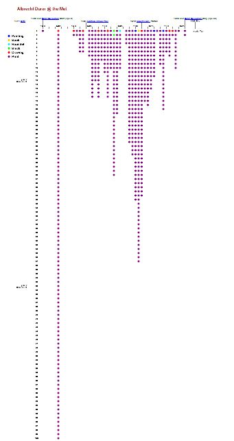
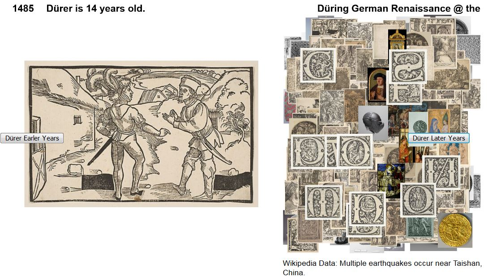
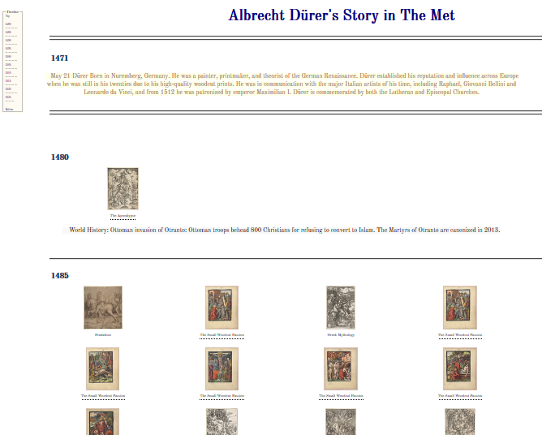
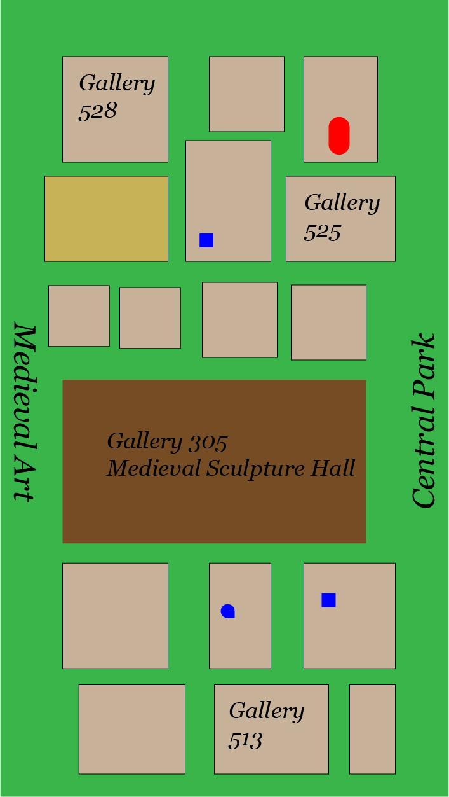

Met Dürer Visualizations
by Suzanna Schmeelk
Albrecht Dürer @ the Met
Albrecht Dürer's Artwork that is housed in the Metropolitan Museum of Art in Manhattan, New York.

This is a quantative sprint representing Albrecht Dürer's works in The Metropolitan Museum of Art in Manhattan, New York. The data visualization juxtaposes Dürer's life along with what pieces of his art are housed in The Met based on the object create date.
Düring German Renaissance @ the Met
Albrecht Dürer's Public Domain Artwork that is housed in the Metropolitan Museum of Art in Manhattan, New York, juxtaposed with other worldly insights.

This is a qualitative sprint representing works in The Metropolitan Museum of Art in Manhattan, New York, during the German Renaissance with the focus on Albrecht Dürer. The sprint juxtaposes Wikipedia data, along with The Met public domain images that transpire for the object create dates of Albrecht Dürer's works of art.
Dürer's Story In the Met
Albrecht Dürer's biography as indicated by his artwork housed in the Metropolitan Museum of Art in Manhattan, New York.

This is an interactive story timeline for Albrecht Dürer with his artwork in The Metropolitan Museum of Art in Manhattan, New York. The sprint juxtaposes Dürer Wikipedia data, along with The Met public domain images that transpire for the object create dates of Albrecht Dürer's works of art in The Met. Art board 1 Art board 2
{kind=link}
{kind=link}
Where is Dürer's In the Met?
This visualization is to guide people to Albrecht Dürer's artworks housed in the Metropolitan Museum of Art in Manhattan, New York. Art board 1

This is an interactive mobile application for Met visitors and scholars to discover where Dürer art pieces are in the Met as well as a story timeline for Albrecht Dürer. The sprint juxtaposes Dürer Wikipedia data, along with The Met public domain images that transpire for the object create dates of Albrecht Dürer's works of art in The Met.
About Our Class @ Parsons

PGDV 5200 Taught by Richard The (linkedin, website)
Students: Clare Churchouse, Emily Chu, Ryan Best, Richard The, Jennie Choi, and Suzanna Schmeelk (not shown in photo Colleen Mccaffrey, TA: Flavio Sant'anna)
"Parsons' Master of Science in Data Visualization is a multidisciplinary program in which students develop skills bringing together visual design, computer science, statistical analysis, and ethical considerations of data analysis and representation. The presentation of data plays a critical role in the shaping of opinion, policy, and decision making in today's increasingly global society. Giving students a competitive edge as they enter the field, the MS program responds to the increased demand for experts who can turn data into insight. This program is part of Parsons' School of Art, Media, and Technology (AMT)."